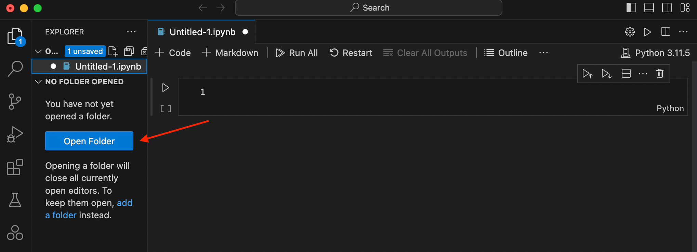
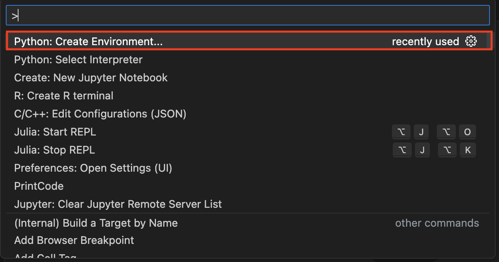
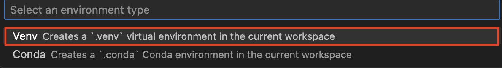
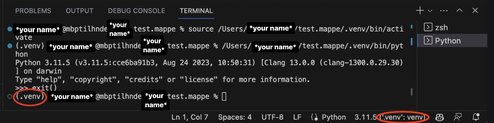

Environments#
Tip
You can copy and paste code in the code blocks by hovering your mouse over the code block and pressing the icon () appearing in the top right corner.
Python environments are isolated spaces where you can manage separate sets of packages for different projects.
This helps avoid conflicts when different projects require different versions of the
same package. For example, one project might require numpy==1.23, while another may require numpy==1.25. If these versions
are incompatible, switching back and forth between them for different
projects can become quite annoying. Instead of reinstalling the correct version each time you switch projects,
you can use environments that allow you to keep fully functional and separate
package lists and swap between them.
Tip
If you need to know what packages are, please check here.
Python environments allow you to maintain separate sets of packages, making switching between configurations without conflicts. Using environments can be used for a variety of things:
Quickly testing whether certain packages conflicts
Checking whether a developed Python script is compatible with different package versions
Ensuring a minimal package list (no unused packages)
Maintaining multiple functional package environments
It is recommended that each course or project be given a separate environment to ensure that their requirements do not interfere.
Environment management with Conda#
Conda lets users create separate sets of packages for different projects called environments. When users switch between projects, they can switch to the environment of that project, which would prevent the need to manage packages each time a different project is used. The Conda manager allows you to create and manage environments with specific packages and Python versions. This can be useful if a specific package requires a specific Python version.
One can list all global environments by:
conda env list
conda env list
Note
A global environment, created using conda create --name is stored in Conda’s default directory.
Creating your environment in the global environment list will make it
to activate just the environment name and centrally manage all your environments.
Alternatively, one can create subdirectory environments.
These are created using conda create --prefix. It will be stored in the specified
folder, which would keep the environment self-contained within your project.
Creating an environment with commands#
For example, let us create an environment with Conda for Course A. An environment can be created by using:
# create an environment named 'course-A' (in the global environment list)
conda create --name course-A
# alternatively, the environment can be placed in a subdirectory
conda create --prefix course-A
# create an environment named 'course-A' (in the global environment list)
conda create --name course-A
# alternatively, the environment can be placed in a subdirectory
conda create --prefix course-A
Creating an environment from an environment.yml file#
In some cases an installation guide will share an environment.yml file.
This file contains the full details to reproduce an environment.
When having an environment.yml file, it can be installed with (note, the file
can have any name):
conda env create -f environment.yml
conda env create -f environment.yml
Here is an example environment.yml file that creates an environment
named course-A, with Python and numpy:
name: course-A
channels:
- conda-forge
- nodefaults
dependencies:
- python
- numpy
Activating an environment#
Once the environment is created, one can use the environment by activating it.
# if the enviroment was created with --name:
conda activate course-A
# if the environment was created in a sub directory (--prefix):
conda activate .\course-A
# if the enviroment was created with --name:
conda activate course-A
# if the environment was created in a sub directory (--prefix):
conda activate ./course-A
Once an environment has been created and sourced (activated), all python commands only act in that environment.
Every executed Python script will only use the packages installed
in the environment. To exit the environment, run the command conda deactivate.
Example environment management with Conda#
Below is a complete example of creating an environment using a specific Python version, installing a specific package, running code in the environment, and exiting it.
conda create --name numpy-env python=3.12
conda activate numpy-env
conda install "numpy=1.23"
python -c "import numpy as np ; print(np.__version__)"
conda deactivate
conda create --name numpy-env python=3.12
conda activate numpy-env
conda install "numpy=1.23"
python3 -c "import numpy as np ; print(np.__version__)"
conda deactivate
This code creates a new Conda environment named numpy-env with Python 3.12 installed. It then activates the environment and installs version 1.23 of the Numpy library. After installation, it runs a Python command to import NumPy and print the installed version of Numpy to verify the installation. Finally, the environment is deactivated, returning the user to their previous environment.
Tip
Further documentation on environments can be found here while management of the environments can be found here.
The equivalent environment.yml file would look like this:
name: numpy-env
dependencies:
- python=3.12
- numpy=1.23
Environments with venv#
While Conda offers powerful tools for managing complex environments and dependencies, there are
situations where venv might be more suitable. venv is ideal for simpler projects that only require
Python packages, as it is lightweight and easy to use.
It is built into Python, so it does not require
additional installation, making it convenient for managing environments directly tied to the system’s Python.
Using venv in VS Code#
VS Code helps manage virtual environments through some built-in commands. Here is a brief explanation of how to set up a virtual environment in VS Code:
First, check that you are already in a virtual environment (see point 5 below). If not, proceed to the next step.
Create a folder/directory according to the course you wish to work on.
This is optional but helps keep your projects organized..
Press Open Folder to start working in the designated course folder. If you already have several opened folders, this will not be visible. Just select the workspace.

We will create a virtual environment once you are in a folder/workspace. Press Ctrl+Shift+P and search for
Python: Create Environment..., and select that.
Next, select the option below:

Check that the virtual environment is functional. Sometimes you must run a small Python script to enable the virtual environment, either press , or Shift+Enter.

{kind=link}
{kind=link}
{kind=link}
{kind=link}
Using venv in the Terminal#
The package venv creates environments using the pip method.
Once an environment has been created and
sourced (activated), all pip commands only act within that environment.
Tip
If you need to learn what pip is, please check the description in pip.
Note
The venv package can only create environments with different packages.
It cannot switch between different Python versions.
An environment will be a directory on your computer. Deleting it will be the same as deleting the environment.
Warning
Environments in Visual Studio Code requires special handling when working in workspaces. Please see here.
An environment can be created using:
python -m venv <path to venv>
# create an environment named 'course-A' in the current directory
python -m venv course-A
python3 -m venv <path to venv>
# create an environment named 'course-A' in the current directory
python3 -m venv course-A
Once created, one can activate/use the environment by sourcing a file.
Change course-A with the name of the environment.
Warning
Please see this FAQ entry!
course-A\Scripts\Activate.ps1
source course-A/bin/activate
Every executed Python script will only use the packages installed
in the environment, and every pip command will only install/remove packages
in the environment. To exit the environment, run the command deactivate.
Below is an example workflow of creating an environment, installing a specific package, running a code using the environment, and exiting the environment.
python -m venv numpy-env
numpy-env\Scripts\Activate.ps1
pip install "numpy==1.23.*"
python -c "import numpy as np ; print(np.__version__)"
deactivate
python3 -m venv numpy-env
source numpy-env/bin/activate
pip install "numpy==1.23.*"
python3 -c "import numpy as np ; print(np.__version__)"
deactivate
This code creates a Python virtual environment called numpy-env using venv, then activates
it to install version 1.23 of Numpy using pip. After installing, it verifies
the installation by printing the installed Numpy version. Finally, the environment is deactivated,
returning the user to their previous environment.
Tip
Further documentation on environments are available on VS Code’s webpage.
Using Virtual Environments with Jupyter/IPython#
Jupyter Notebooks and IPython are interactive computing environments that enable users to write and execute code in a notebook format. These notebooks can combine code, text, and visualizations. Jupyter Notebooks are commonly used in many DTU courses.
Virtual environments and Jupyter can cause issues when Jupyter is installed in the system (not in the virtual environment). The kernel is fixed to launch the Python interpreter it was installed with. The kernel is a process that allows you to execute the code in your Jupyter Notebook by providing the necessary Python language support.
The simplest way to check whether your Jupyter Notebook is using your virtual environment is to execute the following code in a notebook cell:
import sys
print(sys.exec_prefix)
You are all set if it shows your virtual environment’s directory. If not, install the kernel runner in the virtual environment:
python -m ipykernel install --prefix <path to venv|conda-env>
python3 -m ipykernel install --prefix <path to venv|conda-env>
Replace <path to venv|conda-env> with the path to your virtual environment.
The problem and the fix are described in greater detail
here.